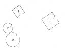
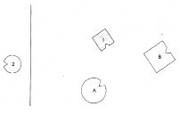
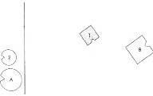
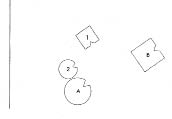
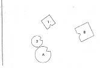
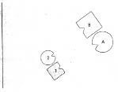

HELLINGER Bruno’ya Üzerinde çalışmak istediğin konu nedir?
BRUNO Kendimi eli kolu bağlı hissediyor, nereye doğru hareket edebileceğimi bilemiyorum.
Annem dört yıl önce, babamla dağlara yaptıkları bir gezi sırasında öldü.
HELLINGER Kaza mıydı? Dağ kazası?
BRUNO Ayağı kaymış. Bunun ardından babamdan –bütün bu olup biten de onunla ilişkili- aslında çoktan bilmem gereken bir şey öğrendim; babamın uzun süre evlilik dışı bir ilişkisi olmuş. Birlikte olduğu kadın da vaktiyle aynı yerde çalışırmış.
HELLINGER Bunu sana anlatmamalıydı. Böyle bir şey çocukları ilgilendirmez. Sistemde daha üst bir düzleme, ana baba düzlemine aittir. Bunun altında yer alan düzlemdekilerin, yani çocukların bu konuları öğrenmeye izin yoktur. Bundan ötürü terapi sırasında ebeveynin sırlarını korurum. Ayrıca edindiğin bilgi senin için bir önem de taşımıyor. Ailede daha önce ölen biri var mı?
BRUNO Kız kardeşim ölmüştü.
HELLINGER Kaç yaşındaydı?
BRUNO On sekiz. Ben ondan iki yaş büyüğüm. Down sendromluydu.
HELLINGER Down sendromlu mu? İşte bu önemli bir bilgi. Bir ailede engelli bir çocuk varsa sağlıklı olanlar kendilerini hak etmedikleri bir avantaja sahip hissederler. Bunda onların yapabileceği bir şey yoktur, kendi suçları olmayan bir dezavantajı olanların da yapabileceği bir şey olmaması gibi. Çoğu zaman sağlıklı kardeşler kendi kendilerine sınırlar getirirler. Çünkü sakat bir kardeş karşısında hayatlarını kendi yaşamları olarak almaya cesaret edemezler. Burada ise öncelikle seni harekete geçireni bulmak gerek.
Gruba Böyle bir bağlamı araştırdığımızda kimsenin kötü olmadığını görüyoruz. Alınyazısı bu. Suçsuzluk ve suçun ötesindeki güçler burada iş başında. O nedenle de suçlu aramıyor, gözümüzü bu güçlere çeviriyor ve onlarla uyum içinde çözümü arıyoruz.
Bruno’ya Ailede başka önemli bir şey yaşandı mı? Kaç kardeştiniz?
BRUNO Sadece ikimiz.
HELLINGER Sadece ikiniz mi? O zaman doğal olarak daha da yoğunlaşıyor durum. Ebeveyninden biri önceden bir evlilik ya da ciddi bir ilişki geçirmiş mi?
BRUNO Hayır.
HELLINGER Kız kardeşinin sakatlığından ötürü ana baban arasında suçlamalar oldu mu? Biri diğerini bundan ötürü suçladı mı?
BRUNO Annem nispeten yaşlıydı.
HELLINGER Kaç yaşındaydı?
BRUNO Kırk.
HELLINGER Kırk mı? Baban anneni ya da annen babanı bundan ötürü suçluyor muydu? Senin izlenimin nedir?
BRUNO Babam değil ama annemin kendisini suçlu hissettiğini ve bir neden aradığını sanıyorum.
HELLINGER Bu kadarı yeterli. Şimdi köken aileni dizelim ve yalnızca babanı, anneni, seni ve kız kardeşini alalım.
1. Resim

B Baba
A Anne, kazada ölmüş
1 İlk çocuk, oğul (=Bruno)
2 İkinci çocuk, kız, Down sendromlu, on sekiz yaşında ölmüş
HELLINGER Baba nasıl? Ne hissediyor?
BABA Ağırlık biraz.
HELLINGER Ağırlık mı? Biraz açabilir misin?
BABA Arkam aileme dönük, bu da oldukça nahoş bir duygu.
HELLINGER Anne nasıl?
ANNE Çok sıkıntılı. Ne eş ne de oğulla bir ilişki kurma şansım var. Sanki bunun hiçbir yolu yokmuş gibi hissediyorum.
HELLINGER Evet, doğru.
Bruno’nun temsilcisine Oğul nasıl?
İLK ÇOCUK Kendimi bölünmüş hissediyorum. Kız kardeşim annemi elimden alıyor.
HELLINGER Gruba Dikkatinizi çekmek istediğim bir şey var. Bazı kişiler durdukları yerden resme bakarak ne hissetmeleri gerektiği sonucunu çıkarır. Kız kardeş üzerine söylediği işte böyle bir çıkarsama.
HELLINGER Bruno’nun temsilcisine Kendi içine yoğunlaşarak gördüğün resimden bağımsız olarak o an yaşadıklarını hissedersen daha iyi olur.
İLK ÇOCUK Kendimi bölünmüş hissediyorum.
HELLINGER Kız kardeş nasıl?
İKİNCİ ÇOCUK Kendimi çok rahatsız, sıkışmış ve çok bağımlı hissediyorum.
HELLINGER Dışarı çık ve kapıyı arkandan kapa bir bakalım.
Gruba Birisinin dışarı çıkması ölmesi ya da kendini öldürmesi anlamına gelir. Bu durumda kız kardeşin ölmesi demek.
2. Resim

HELLINGER Annede ne değişti? Daha mı iyi oldu, daha mı kötü?
ANNE Kendimi daha kötü hissediyorum. Çok yalnız.
HELLINGER Baba nasıl? Daha mı iyi, daha mı kötü?
BABA Daha kötü.
HELLINGER Erkek kardeş? Daha mı iyi, daha mı kötü?
İLK ÇOCUK İkisi birden. Bir yandan anneyi daha iyi görebiliyorum. Bu da rahatlatıcı…
HELLINGER Gruba Birisi öldüğünde kişinin kendini rahatlamış hissettiğini dile getirmesi çok zor bir şeydir. Oysa sıklıkla olan budur. “Bir yandan, öte yandan” diyorsa benim için bunun anlamı, rahatlamış olduğudur.
İLK ÇOCUK Evet.
HELLINGER Gerçek bu. Böyle ve kötü bir yanı yok. İnsan bu nedenle kötü biri haline gelmez.
Anneye Şimdi sen dışarı çık! Ölen sensin şimdi. Dışarı çık ve kapıyı arkandan kapa!
3. Resim

HELLINGER Baba şimdi nasıl?
BABA Berbat.
HELLINGER Gruba İzleniminiz ne? Söylediği doğru mu?
Babanın temsilcisi güler.
HELLINGER Hah! Görüyor musunuz? İşte bu yasak duygu. Kendini daha iyi hissediyor. Bu böyle. Bu ailede hiç şansı yoktu. Bu durumda kendine bir kız arkadaş aramaktan başka ne yapabilirdi? Onu suçlayabilir misiniz? Suçlanamaz.
Oğla Sen şimdi nasılsın?
İLK ÇOCUK Kötü. Kendimi yalnız hissediyorum.
HELLINGER Şimdi kendini yalnız hissediyorsun.
Gruba Burada gördüğümüz iyi bir çözüm değil doğal olarak. Ancak sistemin aradığı çözüm bu. Şimdi bir bakalım, daha iyi bir çözüm bulabilir miyiz.
HELLINGER dışarıdaki kız ve anneye İçeri girebilirsiniz artık. Yerlerinizi alın.
4. Resim

HELLINGER kıza Dışarıda kendini nasıl hissettin? Daha mı iyi, daha mı kötü?
İKİNCİ ÇOCUK Önce derin bir nefes almam gerekti, ardından kendimi daha iyi hissettim.
HELLINGER anneye Ya sen dışarıda nasıldın? Daha mı iyi, daha mı kötü?
ANNE Daha iyi. Onunla karşılaştığıma mutlu oldum.
Anne ile kız gülerler.
HELLINGER Bruno’ya Onunla karşılaştığı için mutlu oldu. Annenin ölümünün ardındaki dinamiği görüyor musun? Kızının peşinden gitti. Saygıdeğer bir dinamik ama hiç de iyi değil.
5. Resim

HELLINGER Babaya Şimdi nasılsın?
BABA Daha iyi
HELLINGER Bruno’ya Ebeveynin bu kızın doğumuyla ilişkilerinden vazgeçmiş. Kimden kaynaklanmış bu? Hangisi pes etmiş?
BRUNO Annem.
HELLINGER İlişkiden anne vazgeçmiş. Bundan ötürü değişimin anahtarı da ondaydı. Şimdi onu babanın, kocanın yanına yerleştirelim, bakalım ne olacak.
6. Resim

HELLINGER babaya Böyle nasıl? Nasılsın?
BABA Aslında çok iyi. Evet.
HELLINGER kıza Sen nasılsın? Daha mı iyi, daha mı kötü?
İKİNCİ ÇOCUK Daha iyi. Etrafımda yaşama sevinci var, nefes alabiliyorum.
HELLINGER Gruba Tuhaf. Tam da şimdi, ebeveyn bir çift olduğu ve çocuklarla o kadar da fazla ilgilenmediklerinde çocuklar, özellikle de sakat olan, kendilerini daha iyi hissediyor.
Oğla Sen nasılsın?
İLK ÇOCUK İyiyim.
HELLINGER Kız nasıl?
İKİNCİ ÇOCUK Ben de iyiyim.
HELLINGER Anne nasıl?
ANNE Çok rahatladım.
HELLINGER Doğru. Çözüm bu olacaktı. Ancak annenin ve babanın görmediği, bu çocuğu dünyaya getirirken taşıdığı riskin bilincinde olduklarıydı. Ama bu edimin taşıdığı değerin arkasında durmadılar. Aksi takdirde kızlarının sakat oluşunun da arkasında dururlardı. İlişkilerinden vazgeçmek yerine birlikteliklerini sürdürselerdi, kızları belki hâlâ hayatta olurdu. Her durumda daha iyi hissederdi kendisini.
Bruno’ya Ana babanı böyle birlikte gördüğünde onlardan yaşamını da alabilirsin. Bunun nasıl olduğunu hissetmek için kendi yerine geç.
Bruno dizimdeki yerini aldığında Kız kardeşine bak şimdi. Bak ve şunu söyle; “Sevgili kardeşim! Ben senin ağabeyinim.” Söyle bunu ona! Adı neydi?
BRUNO Maria.
HELLINGER Sevgili Maria, ben senin ağabeyinim.
BRUNO Sevgili, Maria, ben senin ağabeyinim.
İKİNCİ ÇOCUK Seni seviyorum.
HELLINGER Bruno’ya “Kaderine saygı duyuyorum” de ona.
BRUNO Kaderine saygı duyuyorum.
HELLINGER “Ve kaderin ne olursa olsun arkandayım.”
BRUNO Ve kaderin ne olursa olsun arkandayım.
HELLINGER “Kendi kaderimin de arkasındayım.”
BRUNO Kendi kaderimin de arkasındayım.
HELLINGER Şimdi seninle bir alıştırma daha yapacağım, zor ama iyileştirici bir alıştırma. Kız kardeşin ve sen, biraz ilerleyin, biraz daha yaklaşın birbirinize ve ana baba önünde eğilin. Duygunuzu izleyerek. Sevgiyle! Ebeveyn ve sizin için üstlendikleri şey önünde eğilin! Eğilin!
Eğilirler. Bruno ağlamaya başlar.
HELLINGER Bruno’ya İşte iyileştirici duygu bu. Evet. “Sevgili baba, sevgili anne” de onlara ya da küçükken nasıl sesleniyordu isen öyle seslen. Derin nefes al! Çocukken ne derdin onlara?
BRUNO Babacığım.
HELLINGER “Seni onurlandırıyorum.” Böyle söyle!
BRUNO Seni onurlandırıyorum.
HELLINGER “Sevgili anne” ya da nasıl seslenirdin, öyle söyle.
BRUNO Anneciğim.
HELLINGER “Anneciğim!”
BRUNO Anneciğim!
HELLINGER “Seni onurlandırıyorum.”
BRUNO Seni onurlandırıyorum.
HELLINGER Doğrul şimdi ve onlara bak, dosdoğru gözlerine bak; annenin ve babanın gözlerine.
ana babaya Bu size kendinizi nasıl hissettiriyor?
Her ikisi de başlarıyla onaylar.
HELLINGER Evet. Artık onurunuzun arkasında olabilirsiniz.
Bruno’ya Sen de artık onuruna sahip çıkabilirsin. Baba olarak kendi çocukların karşısında da onuruna sahip çıkabilirsin. –Tamam, bu kadar.
Gruba Gördüğünüz gibi, burada yaptığımız, bütün katılımcılara saygı ile derin bir saygı içeren bir çalışma. Ve her zaman çözüme yönelik. Geçmişi gereksiz bir şekilde karıştırmaya değil, kişiye yaşamı için güç verecek ve etkisini güncel ailesinde gösterecek bir çözüme yönelik.
KATILIMCI Ben hâlâ senin Bruno’nun neden ayrıntılı bir şekilde anlatmasına izin vermediğini, bunun yerine çalışmayı bariz bir şekilde yapılandırdığını düşünüyorum. Senin için onun köken ailesiyle çalışacağın çok mu açıktı?
HELLINGER Hayır. Kilitlenmiş olduğu herhangi bir şey olup olmadığına baktım. Down sendromlu kız kardeşten söz ettiğinde onun bu olduğunu açıkça gördüm.
Ailede sakat bir çocuğun olması her zaman anlamlıdır. Bu, engelli kardeşin erken ölümüyle daha sonra annesinin bir kazada ölümünden bahsettiğinde daha da güçlendi. Bunlar benim için önemli bilgilerdi, çalışmayı onlarla yaptım. Başka bir şey olmuş olsaydı daha sonra onu ortaya çıkarırdık. Ben işe dikkat çekici olanla başlarım, bunlar da her zaman vakalardır. Anne ölmüş, bu bir vaka. Kız kardeş ölmüş. Bu da bir vaka. Down sendromluymuş. O da öyle, bir vaka. Çözüm için daha fazlasını bilmeye gerek yoktur.
Çözüm aramak yerine, yardım arayanın her şeyi anlatmasına izin verdiğinde terapistin kafası karışır. Vakaların etkisine açılırsanız bunların içerdiği gücü anında hissedebilirsiniz. Sorulması gereken yalnızca, bunda güç olup olmadığıdır. Bruno bu vakaları andığında bunların güç ve enerji dolu olduğunu herkes hissedebildi. Ben bu güçle çalışıyorum.
KIZ KARDEŞİN TEMSİLCİSİ Bu çalışmanın yoğunluğunun etkisi altındayım hâlâ.
HELLINGER Sen de katıldın, etkisini nasıl gösterdiğini dolaysızca yaşadın. Kişinin kendisini bir konumdan diğerine nasıl farklı hissettiğini. Bu çalışmalarda bireyler yabancı bir alınyazısı, yabancı bir duyguya katılır. Bunun nasıl olduğunuysa bilmiyoruz. Bir düşünün; eğer biz bunu yapabiliyorsak, bir çocuk ailesindeki başka duygular ve alınyazılarına ne kadar daha fazla bağlı olacaktır.
BAŞKA BİR KATILIMCI Önemli şeyleri toplayıp zihninin önemsiz olanlarla karışmasına izin vermemeni böylesine bir güvenle sağlaman beni şaşırtıyor.
HELLINGER Bunun nasıl öğrenildiğini sana söyleyebilirim.
KATILIMCI Öğrenmek isterim.
HELLINGER O zamana dek öğrendiklerini unutursun. Bu ilk adımdır. Ardından bütün katılımcılara sevgi ve saygıyla bakarsın. Yani Bruno, annesi ve kız kardeşine sevgi ve saygıyla. Bunlar baş kişilerdi. Sonra bir çözümün ortaya çıkıp çıkmadığını görmek için beklersin. Bu temel tavır benimsendiğinde çözümün nerde olduğu çoğunlukla oldukça çabuk ortaya çıkar. Elbette bazı teknikler de öğrenilebilir. Örneğin böyle bir sistemde birisi öldüğünde olanları görmek için bir sınama yapmak önemlidir. Bunu sınamak için ölen kişiler kapıdan dışarı çıkarılır. Bireylerin ölümü bu ailenin başvurduğu çözümdü. Ama iyi bir çözüm değildi bu. O nedenle başka, daha iyi bir çözüm aranır.
Bruno bize ailesinin çözüm denemesini gösterdi. Ailesindeki ilişkilere ilişkin içsel bir resim taşıyordu. Ailenin çözüm denemesi iyilik getirmedi ve kız kardeşiyle annesinin ölümlerine neden oldu. Bruno içsel resmini dışa vurdu ve bunu görebildik. Resim bir kez dışa vurduğunda daha iyi bir çözüme doğru değiştirilebilir. Bu çözümün Bruno’nun yaşamında etkili olması için ailesinde hiçbir şeyin değişmesi gerekmez. Babasının değişmesi, burada yaşananları öğrenmesi gerekmez. Ölmüşlerse ölü olarak kalır. Bruno’ya gelince, bu farklı, daha iyi resmi sevgiyle ruhuna alabilir; o zaman bu resim onun iyiliğine çalışacaktır.
Bruno’ya Bu yeni içsel resminle eve gittiğinde çocuklarının yüzü ışıyacak. Burada işte böyle oluyor bu çalışma; son derece yalın ve asıl önemli olana yakın.
KATILIMCI Uygulama düzleminde şöyle bir sorum var benim; Bruno sana özel olarak gelseydi, hemen ilk saatte böyle mi çalışırdın? Yanıt evet ise ona başka seanslar da önerir miydin?
HELLINGER Evet, hemen ilk seansta böyle çalışır ama başka seans önermezdim. Bruno için gereken her şeyin bu seansta ortaya çıktığını gördünüz. Ancak gözetmesi gereken bir şey daha var –bunu da ona ara verdiğimiz sırada söyledim. Sistemin dinamiği açısından kızının kız kardeşini taklit ettiği, yani kızının, şimdiye dek bütünüyle onurlandırılmadığı için kız kardeşinin alınyazısına kilitlendiği tahmin edilebilir. Bruno evine gittiğinde, sakat kız kardeşinin bütünüyle onurlandırmasından ötürü ailesi ve kızında neyin değiştiğini görebilir. Tek başına Bruno’nun artık sevgiyle kız kardeşinin yanında olmasıyla bile kızı kendisini daha iyi hissetmekte.
Terapi süreci balistik bir eğriyi andırır. Başlangıçta enerji hızla tepe noktasına yükselir, sonra yeniden düşer. Sürece de tam burada, tepe noktasında son verilir. Bu noktayı aşan her şey gücü düşürecektir. O zaman da enerji eylemden çok bilgiye gider.
KATILIMCI Yani daha ilk seansta böyle çalışırdın, öyle mi?
HELLINGER Evet. Ve Bruno ile ilave bir şey yapmazdım. Elbette Bruno’nun ve ebeveyninin güçlerine de güveniyorum. Ebeveyninin gücünü Bruno artık alıyor. Artık en iyi ellerde; babasının, annesinin, kız kardeşinin ellerinde. Bunlardan daha iyi eller yok. Onu bu ellere bırakır bırakmaz ben geri çekilirim.
Eski Çin’de Laotse diye biri varmış. Tao te king diye bir kitapçık yazmış. Oradaki bir cümle, bir yardımcının sloganı olabilirdi: “Göreve çağrılan da, iş bitirildiğinde takılıp kalmaz orada.” Ben bunu bir terapist olarak da yapıyorum. Ardıl görüşme ya da yeniden-analiz diye bir şey yok. Bittiğinde bitiyor.
BABANIN TEMSİLCİSİ Benim için bu dizim özellikle de sonlarında oldukça yorucuydu.
HELLINGER Değinmek istediğim önemli bir nokta var.
Birincisi, böyle bir aile diziminde yer almak, dizimi yapana yönelik bir hizmettir. Bunu bu şekilde yaptın. Ona karşı sevgiyle yaptın, yorucu olmuş bile olsa.
İkincisi, dizimde yer aldığında yabancı duygular hissedersin. Dizim sırasında hissettiklerini üstüne almaman gerek. Bu çok önemli. Dolayısıyla, “Şimdi bunu hissettiysem benim içimde neler olup bitiyor” dememelisin. Yoksa iş çılgınca bir yere varır. Bu nedenle dizimden sonra kendi yaşamına geri dönmek zorundasın.
Son bir nokta olarak; yorucu olan neydi? Bruno’nun senin önünde eğilmesi mi?
BABANIN TEMSİLCİSİ Evet, galiba.
HELLINGER Bunun sana neden yorucu geldiğine dair bir yorum yapacak olursam, şunu söyleyebilirim. Kimi zaman kişinin kendisine yönelik bir onurlandırmayı alması zor gelir. Sözgelimi bu roldeyken oğluna gidip senin önünde eğilirken onu doğrultacak olsaydın bu bir tür kısa devre olurdu. Zamanından çok önce sona ermiş olurdu bu hareketi. Seni onurlandırmasına izin vermek zorundasın. Sevgi aranızda ancak bundan sonra yeniden akabilir.
Bruno’ya Temsilcinin duygularından babanın onurlandırmayı zorlukla kabul edebildiğini okuyabiliyorum. Öyle mi?
Bruno başıyla onaylar.
HELLINGER Babanın temsilcisi bunu hissetti.
Babanın temsilcisine Yine de buna dayanmak senin için iyi bir egzersizdi. Kulağa tuhaf gelse de hakkın olan onurlandırmayı almak ve çocuğuna baba olarak hak ettiğin gibi seni onurlandırma iznini vermek alçak gönüllülüktür. Çünkü burada babalık ile söz konusu olan kişisel bir hak değil, bir edimdir. Baba, iyi ya da kötü birisi olduğu için değil, içerdiği bütün riski göğüsleyerek bu edimi yerine getirmiş olduğu için baba olmuştur. Ben buna onurlandırma ile yaklaşırım.
KATILIMCI KADIN Ben başlangıçta problemin ne olduğu sorusunun sorulmasını beklemiştim. Problem nedir diye sorulmasını. Bunun hiç de gerekmemesi beni şaşırttı.
HELLINGER Sana bir sır vereyim. Sezgi ancak çözüme baktığımda işini görür. Gözlerini soruna çevirenin bakışı son derece daralır ve takılıp kalır. Çözüme bakan ise bütünü ve zamanı geldiğinde çözümü görür. Ve zaman yitirmeden ona göz kırpan çözüme yönelir. Bunun dışındaki her şeyi unutabilir, çünkü ihtiyacı kalmamıştır artık. Oldu mu?
BAŞKA BİR KATILIMCI KADIN Engelli kız çocuğun dünyaya gelişi ile ebeveynin evlilik ilişkisinin sona erişi, kadının sözde suçunun kefareti olarak ilişkiyi kurban etmesi beni çok etkiledi. Kendimi düşündüm, böyle bir şeyi benim yapıp yapmayacağımı. Yoksa bir varsayım mı bu? Ama dizim bunun böyle olduğunu doğruladı.
HELLINGER Olan görüldü, sorulara gerek yok. Kadınla erkek arasında hiçbir ilişki yoktu, bu da kızın doğumuyla bağlantılıydı. Anne bunu ne kadar ele almış olursa olsun başka türlüsünü yapamamış. Gereksindiği yardımı ve bir riski göze alışından, ardından da tüm sonuçlarını taşımasından ötürü takdir bulamamış.
KATILIMCI KADIN Bu beni çok etkiledi.